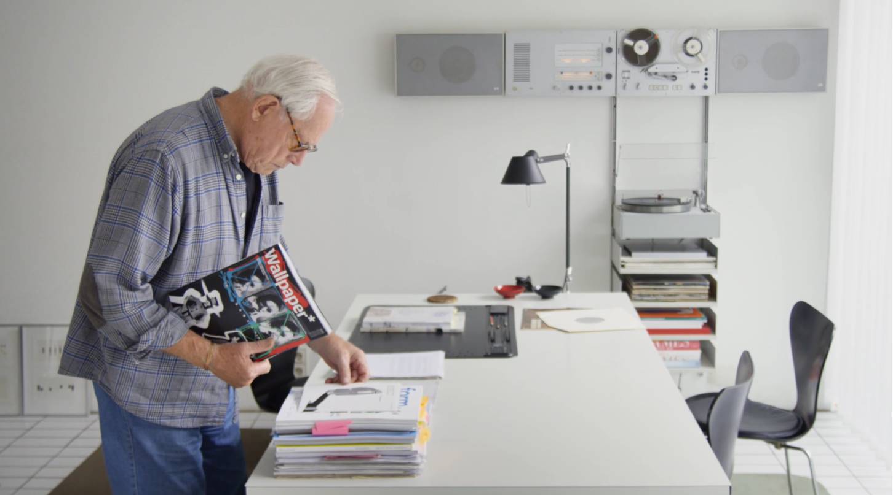
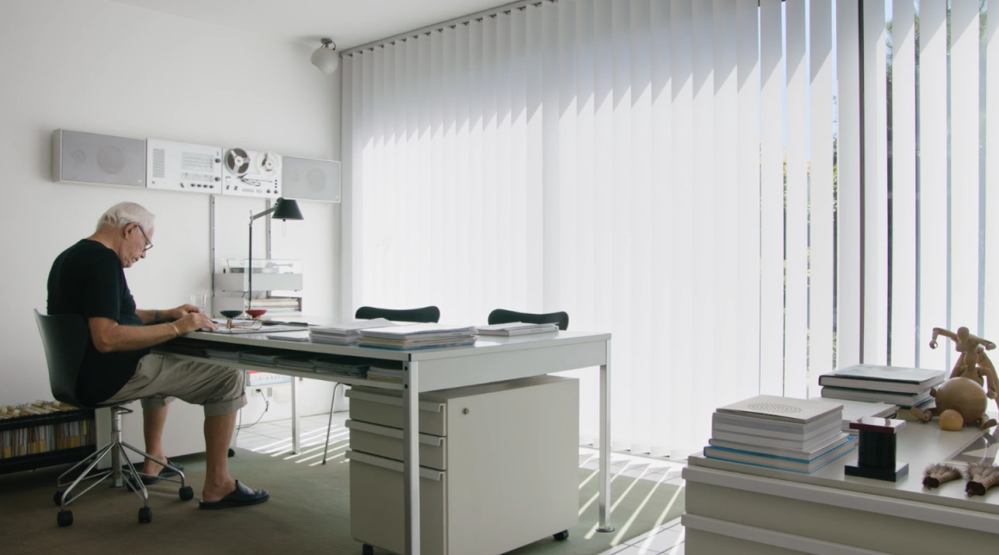
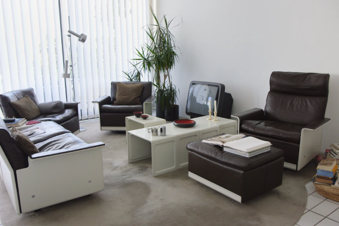
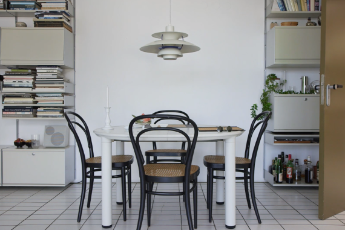
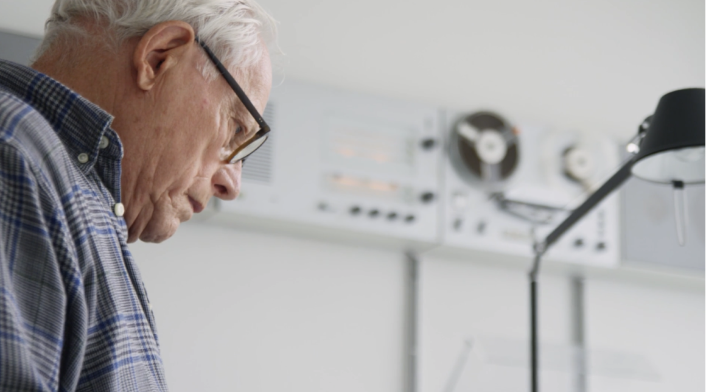
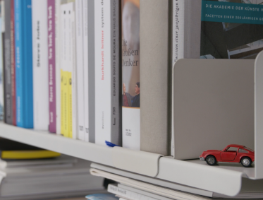
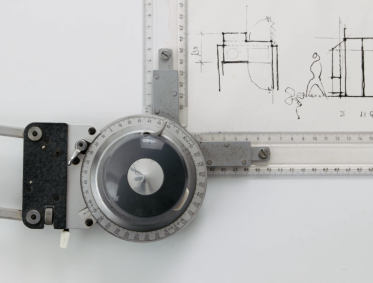
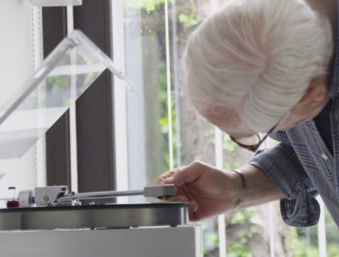

「我們經歷的永遠是體驗背後的故事、理念、細節與我們自身之間的連繫。」
被譽為 90 年代工業設計之父的 Dieter Rams，即便你認為你沒聽過他的名字、他的頭銜，但以一個追求設計、質感生活的人而言，在不知不覺中，你早已經認識他的作品，也聽過他所說過的話。
“Less, but better.”—— Dieter Rams

把日式極簡的精神，與德國的工藝集於一身，且多次與廣為人知的德國家電品牌：BRAUN 百靈牌合作，設計出諸多款經典物件，便是他在工業設計屆之所以留名的原因之一。而在紀錄片導演 Gray Hustwit 拍攝的紀錄片《 Rams 》中，Dieter Rams 罕見地將自己的起居空間公開，不僅讓世人能以動態傳記的方式瞭解他的一生，更藉由他周遭的一切，具象化他的設計理念。

家裡的所有物件，都與工作相關
在一個多小時的紀錄片中，Dieter Rams 的家出現的畫面不算太多，不過卻足以讓人明白「什麼樣的人，住什麼樣的空間」。在明亮簡潔的平房裡，每一樣物件彷彿都擺放在他們專屬的位置上，《 Dieter Rams : As little design as possible 》的編輯作者 Sophie Lovell 就說到，Dieter Rams 喜歡將自己置於一個極度靜謐的環境，在這個簡單安靜的環境之下，他更能夠專注於工作，而在這個他住了將近半世紀的家中，除了和工作相關的工具和物品，在他的家中幾乎找不到。

生活與設計永不分離
沒有人說作為一名設計師就一定得要讓自己做到徹頭徹尾的極致，從住所、用度到生活的所有細節無處不追求所謂的「有質感」，但從 Dieter Rams 的家和他的故事可以知道，唯有從生活最微小、日常的枝微末節開始講究，並抱持著「 Less, but better 」的信念，才能讓他不單是工業設計師 Dieter Rams，更是影響了將近整個世紀工業設計學的重要指標。
Editor Credit
Written by Tokiko Nitta
Photographed by Kazumasa Harada
Photographed by Kazumasa Harada
Information